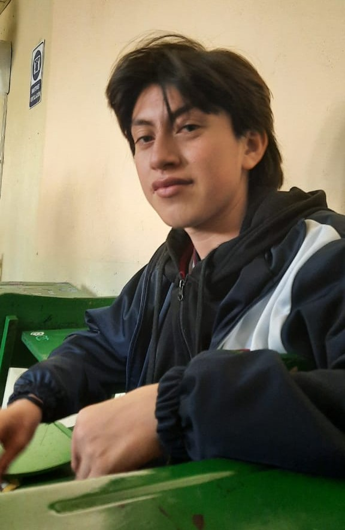

¿QUIÉN SOY?
Soy Stefano Sebastian Silva, estudio en la UNIDAD EDUCATIVA MUNICIPAL TECNICA Y EN CIENCIAS "SAN FRANCISCO DE QUITO". La especialidad que estoy siguiendo en mi colegio es la de el área de Informatica
Mis pasatiempos favoritos son:
- Ver pelicuas, series, animes japoneses y jugar videojuegos en linea.
- Pasar tiempo con mi familia, amigos y conocer gente nueva.
- Tambien me gusta jugar baloncesto y andar en skate, pero solo a veces.